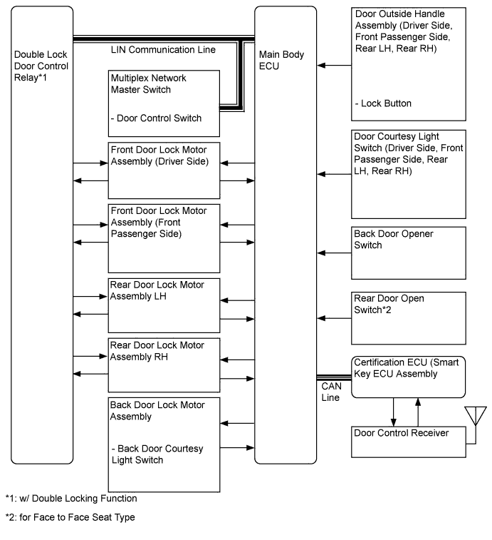

POWER DOOR LOCK CONTROL SYSTEM > SYSTEM DIAGRAM |

| Sender | Receiver | Signal | Line |
| Multiplex Network Master Switch | Main Body ECU | Driver side door manual lock switch signal | LIN |
| Double Lock Door Control Relay | Main Body ECU | Double lock/unlock position switch signal | LIN |
| Certification ECU | Main Body ECU | -Door lock/unlock signal -Double lock/unlock signal | CAN |
| Main Body ECU | Certification ECU | -Door lock/unlock signal -Double lock/unlock signal | CAN |